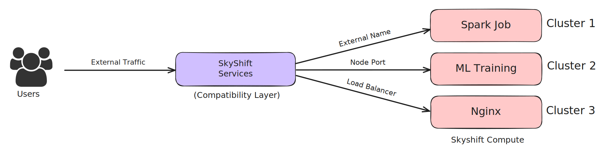
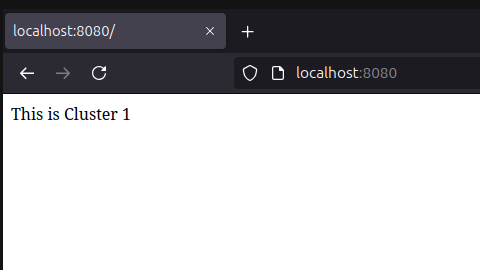

Services in SkyShift CLI#
Introduction#
In SkyShift, a Service is an abstraction that expose jobs/deployments/compute on resource managers like K8s, Ray and Slurm.
{kind=link}
This tutorial will guide you through using SkyShift to create, manage, and delete services within your SkyShift clusters.
Let’s creating an Nginx deployment and setup a node port service. For convenience we have provided some service templates in the examples folder. We will use the Nginx template and setup a node port service on it.
Example: Creating and Exposing an Nginx Job#
We will create 2 SkyShift clusters, and load balance across the 2 clusters. Cluster 1 has 1 replica and will host the first nginx deployment. Cluster 2 has 2 replicas and will host the other nginx deployment. Let’s start by bootstrapping the clusters and deploy nginx.
You can find the cluster configs and other configs for this tutorial in examples/load_balancing
Step 1: Create the Cluster First, create a Cluster1 with an appropriate label which will later be used for deployments: If you already have kind clusters running, SkyShift will automatically detect live kind clusters when launched. Let’s create the cluster using: kind create cluster –name cluster1
Creating cluster "cluster1" ...
✓ Ensuring node image (kindest/node:v1.27.1) 🖼
✓ Preparing nodes 📦
✓ Writing configuration 📜
✓ Starting control-plane 🕹️
✓ Installing CNI 🔌
✓ Installing StorageClass 💾
Set kubectl context to "kind-cluster1"
Similarly, let’s create another cluster cluster2 using kind create cluster –name cluster2
Now that the clusters are setup and running, let’s add them to SkyShift with appropriate labels.
skyctl create cluster kind-cluster1 -l name kind-cluster1
⠹ Creating cluster
Created cluster kind-cluster1.
✔ Creating cluster completed successfully.
Similar to this let’s also create the cluster2 using: skyctl create cluster kind-cluster2 -l name kind-cluster2
Let’s get the current clusters to check if everything is running as expected using skyctl get clusters
⠙ Fetching clusters
NAME MANAGER LABELS RESOURCES STATUS AGE
kind-cluster1 k8 name: kind-cluster1 cpus: 14.05/16.0 READY 1m
memory: 14.81 GB/15.35 GB
disk: 151.13 GB/151.13 GB
kind-cluster2 k8 name: kind-cluster2 cpus: 30.95/32.0 READY 29s
memory: 30.36 GB/30.69 GB
disk: 302.26 GB/302.26 GB
Great! Now we have both the clusters up and running with the expected labels. Let’s setup MetalLB load balancer using:
kubectl apply -f https://raw.githubusercontent.com/metallb/metallb/v0.13.10/config/manifests/metallb-native.yaml –context kind-cluster1
Check the status of pods managed by metallb using:
kubectl get pods -n metallb-system
NAME READY STATUS RESTARTS AGE
controller-595f88d88f-rqg68 1/1 Running 0 123m
speaker-6cwth 1/1 Running 0 123m
speaker-mjzz2 1/1 Running 0 123m
speaker-qczch 1/1 Running 0 123m
Once the pods are up and running, we can apply the following configuration to provide available IP range to MetalLB. kubectl apply -f <path to cluster1-metallb-config.yaml>
kubectl apply -f cluster1-metallb-config.yaml --context kind-cluster1
ipaddresspool.metallb.io/ip-pool-cluster1 unchanged
l2advertisement.metallb.io/l2-advertisement-cluster1 unchanged
Step 2: Deploying Nginx jobs
Let’s use the latest nginx docker image and deploy to cluster1 using: skyctl apply -f <path to cluster1-job.yaml>
⠙ Applying configuration
Created job nginx.
✔ Applying configuration completed successfully.
Similarly let’s deploy to cluster 2 as well: skyctl apply -f <path to cluster2-job.yaml> Please note that there will be actual applications in typical usecases, in this case, we are assuming that the application itself is an nginx deployment.
Let’s verify if the jobs are running as expected using skyctl get jobs
⠙ Fetching jobs
NAME CLUSTER REPLICAS RESOURCES NAMESPACE STATUS AGE
nginx kind-cluster1 1/1 cpus: 0.5 default RUNNING 46m
memory: 128.00 MB
nginx2 kind-cluster2 2/2 cpus: 0.5 default RUNNING 46m
memory: 128.00 MB
✔ Fetching jobs completed successfully.
We can see both the jobs are now running and nginx2 in cluster2 is running with 2 replicas.
Step 3: Creating Services
Now that the nginx deployments and clusters are running, we can expose them using nodeport services, which will allow traffic to reach the deployments.
This can be done using skyctl apply -f <path to cluster1-service.yaml>
⠙ Applying configuration
Created service nginx-service.
✔ Applying configuration completed successfully.
Similarly, let’s expose the second deployment with skyctl apply -f <path to cluster2-service.yaml>
For a sanity check, lets make sure everything is working as expected by inspecting the kubernetes pods using kubectl get pods –context kind-cluster1
kubectl get pods --context kind-cluster1
NAME READY STATUS RESTARTS AGE
cl-controlplane-fcd6f44d6-pzp7t 1/1 Running 0 64m
cl-dataplane-7985b87db6-cbzsq 1/1 Running 0 64m
gwctl 1/1 Running 0 64m
nginx-f8e04002-7b8ff8d57b-q8lt2 1/1 Running 0 49m
nginx-lb-75db845984-t4r8k 1/1 Running 0 39m
~kubectl get pods --context kind-cluster2
NAME READY STATUS RESTARTS AGE
cl-controlplane-fcd6f44d6-vc5bj 1/1 Running 0 64m
cl-dataplane-7985b87db6-zzt2s 1/1 Running 0 64m
gwctl 1/1 Running 0 64m
nginx2-8ecc1c07-dc9c9d845-jp2l6 1/1 Running 0 50m
nginx2-8ecc1c07-dc9c9d845-p6qz6 1/1 Running 0 50m
We can see everything is running as expected, let’s move to the next steps.
Step 4: Configuring load balancer
Since we have two applications running in both the clusters, let’s setup a load balancer on cluster1 which will redirect traffic to the 2 deployments across multiple replicas in cluster1 and cluster2.
Let’s launch a SkyShift job to setup nginx to serve as reverse proxy to both clusters
CLUSTER2_IP=$(docker inspect -f '{{range.NetworkSettings.Networks}}{{.IPAddress}}{{end}}' cluster2-control-plane) && \
CLUSTER1_IP=$(docker inspect -f '{{range.NetworkSettings.Networks}}{{.IPAddress}}{{end}}' cluster1-control-plane) && \
sed -i "s/__CLUSTER2_IP__/${CLUSTER2_IP}/g" nginx-load-balancer.yaml && \
sed -i "s/__CLUSTER1_IP__/${CLUSTER1_IP}/g" nginx-load-balancer.yaml && \
skyctl apply -f nginx-load-balancer.yaml
⠙ Applying configuration
Created job nginx-lb.
✔ Applying configuration completed successfully.
Finally, we can setup a LoadBalancer type service to allow traffic to reach the nginx job. Note: This relies on the MetalLB setup done in the beginning of this guide.
$ skyctl apply -f nginx-lb-service.yaml
⠙ Applying configuration
Created service nginx-lb-service.
✔ Applying configuration completed successfully.
Let’s verify the status of all services:
$ skyctl get services
⠙ Fetching services
NAME TYPE CLUSTER-IP EXTERNAL-IP PORTS CLUSTER NAMESPACE AGE
nginx-lb-service LoadBalancer 80:80 kind-cluster1 default 1m
nginx-service NodePort 10.96.66.20 80:80 kind-cluster1 default 2h
nginx-service2 NodePort 10.96.186.91 80:80 kind-cluster2 default 2h
✔ Fetching services completed successfully.
Now the the service is deployed, we can send traffic to it. To verify it, let’s update the index page for both the deployments to verify load balancing.
Let’s update the landing page using: kubectl exec -it <pod_cluster1> –context kind-cluster1 – /bin/bash -c “echo ‘This is Cluster 1’ > /usr/share/nginx/html/index.html”
Similarly let’s use a different title for cluster2 using kubectl exec -it <pod_cluster2> –context kind-cluster2 – /bin/bash -c “echo ‘This is Cluster 2’ > /usr/share/nginx/html/index.html”
Step 5: Monitoring and Sending Traffic
Let’s send some traffic and test it out. Let’s portfoward localhost to the load-balancer service using: kubectl port-forward service/nginx-lb-service 8080:80 –context kind-cluster1
Now the localhost:8080 will be accessable and route traffic to the 2 clusters randomly. Le’ts refresh the page couple of times to verify the traffic to both clusters.
{kind=link}
We see traffic going to cluster1, and cluster2, now you can setup your own services with SkyShift.